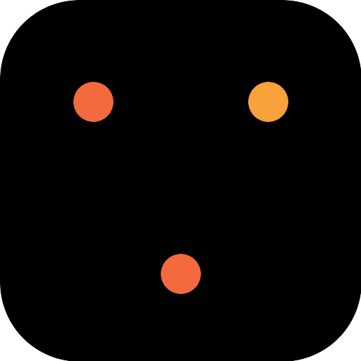
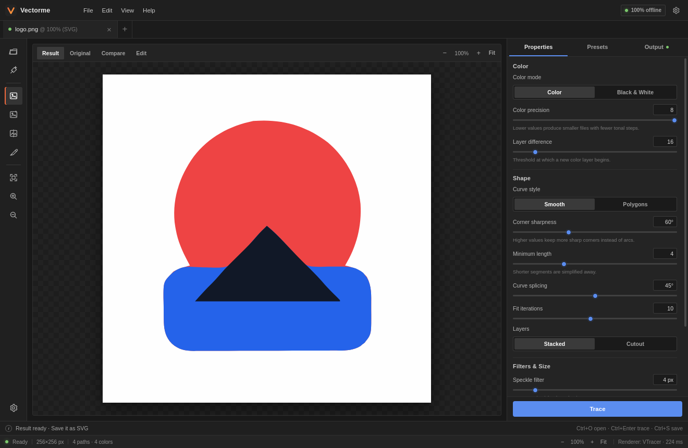
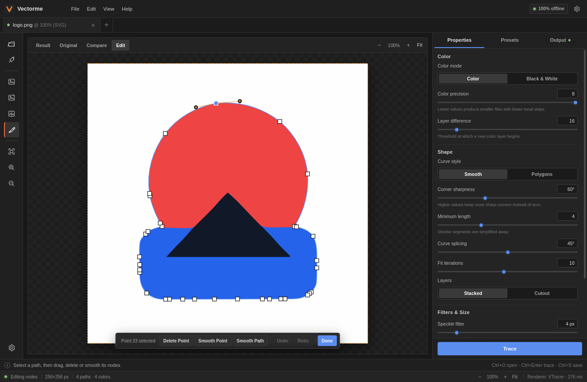
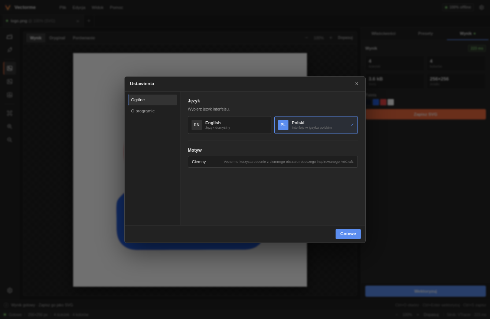

Automatic tracing
Color and black-and-white modes with presets for logos, photos and silhouettes.

VectormeTrace logos, clipart and photos into editable vector paths on your own machine. Tune the palette, correct individual nodes and export a crisp SVG — without cloud round-trips.

Everything you need to go from pixels to paths, without leaving the desktop.
Color and black-and-white modes with presets for logos, photos and silhouettes.
Palette precision, layer difference, corner sharpness, smoothing, speckle filtering and path precision.
Zoom, pan and a draggable split view let you inspect every edge before exporting.
Select a path, drag points and Bezier handles, delete a node or smooth a point or an entire path.
Keep a transparent background or flatten the artwork onto white in one click.
Experiment with node edits safely. Keep working locally with instant preview updates.
Tracing gets you close; the node editor takes you the rest of the way. Click any path to reveal its anchors, drag a point or handle, or smooth a noisy corner without rebuilding the whole image.
Del, Ctrl+Z, Ctrl+Shift+Z, Esc shortcuts.

The whole interface — menus, panels, warnings and editor tools — is
translated. Open Settings with Ctrl+, and
choose Polski. Your choice is remembered locally.
Version 0.1.0 · Linux x86_64 and Windows 10/11 x64.
MSI installer or NSIS setup for Windows 10 and 11.
Download for Windows Unsigned build · SmartScreen may warnDEB package for Debian/Ubuntu/Mint, or a portable AppImage.
Download for Linux AppImage · use--appimage-extract-and-run without FUSE
Prefer to build it yourself? See the build instructions in the README. Release checksums are attached to every GitHub release.